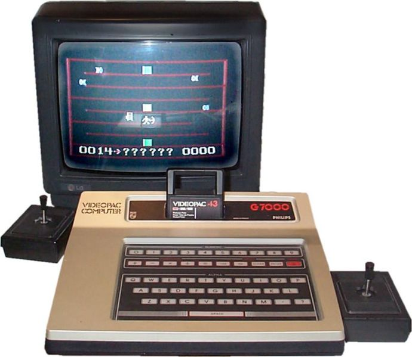

Magnavox Odyssey 2, 1978
Uso de cartuchos em ROM
CPU:
Intel 8048
Frequência: 5,37 MHz
RAM: 64 bytes
Resolução: 160 x 200 pixels
Cores: 16
ROM BIOS: 1 Kbyte
Video-Audio RAM: 128 bytes
No Brasil: Philips Odyssey, lançado em 1983